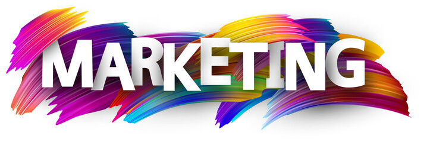

TIPS DEL MARKETING DIGITAL 2024
Estos consejos te ayudaran a comenzar a trabajar con el MD
Enfocate a crear experiencias unicas

1.- Fija tus objetivos
2.- Investiga a las empresas
3.- Actualizate y formate
4.- Ten presencia en RRSS
5.- Crea tu propia web